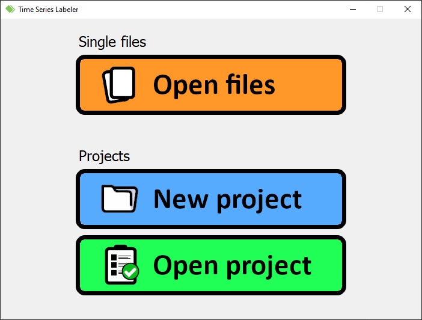
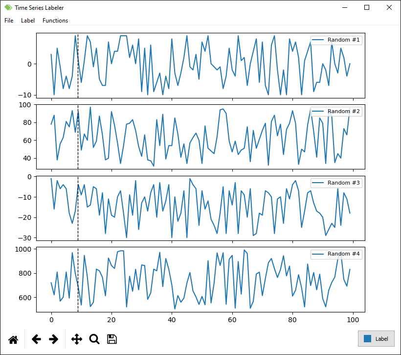

Basic functionalities
Below you can learn about the most common operations available and how they can be performed.
Opening window
When the main.py file is started, the following window appears.
The stage is subdivided in two sections: the first is supposed to be adopted if one wants to work with a single file (or multiple heterogeneous files, i.e. files containing time series which are not related to each other), the last if one is interested in creating a project including a list of files in the same folder focused on the same type of time series.
For instance, we could have one huge file containing the data acquired by some sensors in a vehicle (e.g. accelerometers) and another regarding the temperature of a certain environment (e.g. fridge): the data included in these files are not related, so the application doesn't consider them as well and treats each one independently. Instead, if one of these two files is splitted in multiple smaller files, these could be grouped in a folder and included in a project: they will share the same kind of labels and appearence, so there would be no need to manage each one singularly. This of course couldn't be done with heterogeneous contents.
In particular, three options are presented through the interface:
- Open files: the user can choose which files have to be opened.
- Each file will have its own configuration file associated, containing all the relevant information regarding labels, layout, etc.
- New project: the application will ask the user which folder has to be used for the project.
- The files in the selected directory will be scanned, and if some compatible ones are found they are added in a list
- A wizard for the setup of the project will open, asking which files have to be included and which labels have to be shared among them.
- A single configuration file is generated, containing the list of included files, the labels and the layouts (grouped according to the files content).
- Open project: the program asks for the just mentioned configuration file.
Please check which type of files are supported in the related documentation page.
Main window
Once everything has been settled, the main window opens with a similar layout:
As it can be observed, the time series stored in the first file are displayed subsequently. The order and the contents of the plots can be managed by right-clicking on them: you can customize the displayed time series, add/remove graphs, and so on.
Labels can be put by left-clicking on the two ends or just with a drag-and-drop along the desired span: a colored rectangle will appear to indicate its presence. The current enabled label and its color are indicated by a button in the bottom right corner. The specifics of the labels can be customized from the Settings (fastest way on the menubar: Label > Customize labels). To remove a label, use the mouse to right click on it and press Remove label on the menu (if two or more overlap, the uppermost is removed).
Operations shortcuts are indicated on the menubar entries: furthermore, the directional arrows can be adopted as follows.
- ← and →: navigate the files list (left: previous file, right: following file).
- ↑ and ↓: navigate the labels list (up: previous label, right: following label).
Through the Functions menu, functions of the existing series can be calculated (e.g. moving average). In order to do so, press on the menu and select the desired one from the list: a dialog will appear asking the user the name of the new time series, the source time series to be processed and eventual parameters useful for the function evaluation. At the end of the process, the new calculated functions will be available for plotting. To remove one of the already existing functions, just open the Functions menu again and select the one to be deleted from the Remove function option.
Table of contents
- Project home
- Getting started
- Basic functionalities
- Configuration files
- Supported formats
- View on GitHub